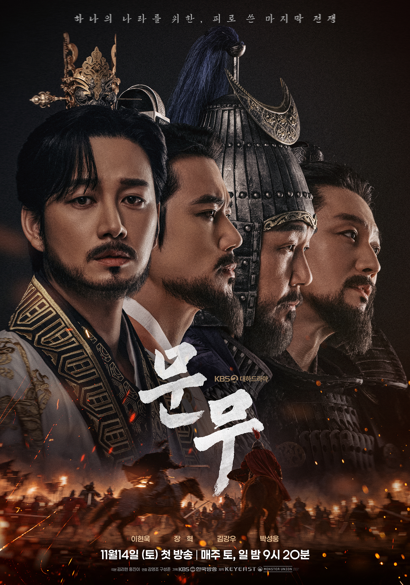
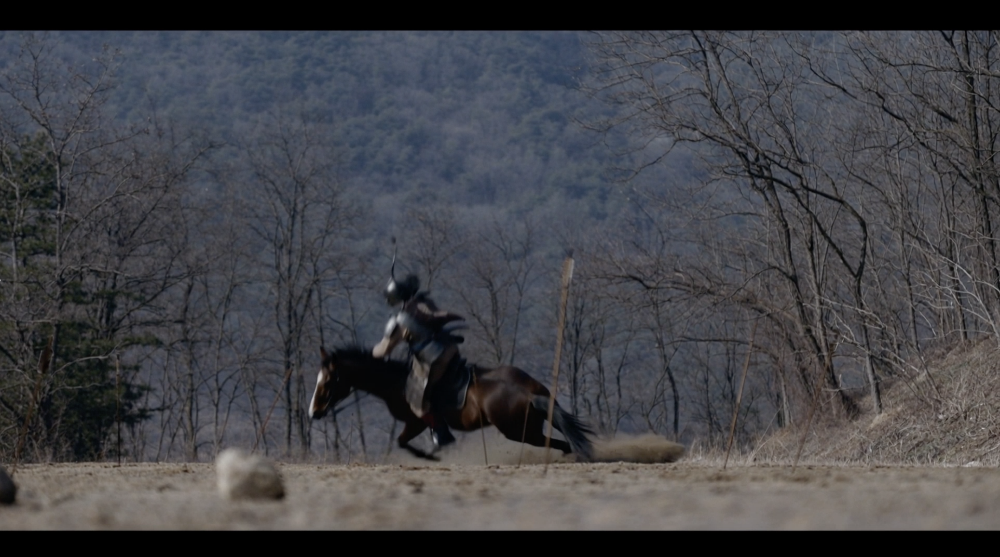
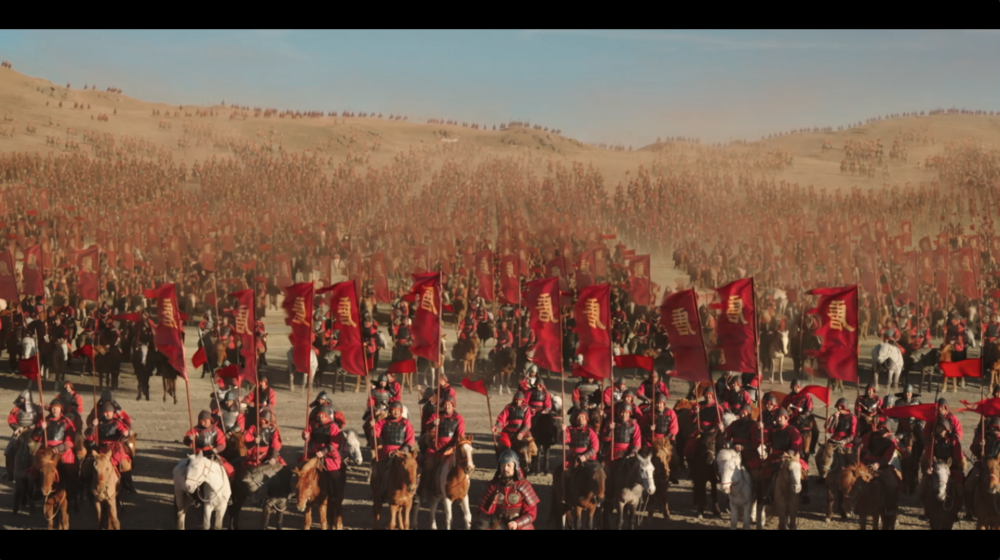
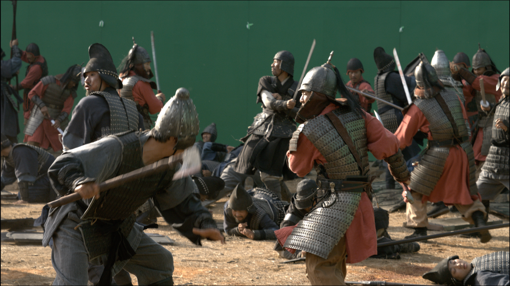

[그림 1] KBS 대하드라마 <문무> 포스터
(출처: KBS 제공)
OTT 시대를 맞아 대하드라마를 바라보는 시청자들의 기대치가 높아졌다. 시청자들은 <왕좌의 게임>, <라스트 킹덤>, <쇼군> 등 글로벌 대작 시대극의 웅장한 세계관과 압도적인 스케일에 열광한다. <문무> 역시 이러한 시청자들의 눈높이에 부응하기 위해 삼국시대의 방대한 역사적 무대와 대규모 전쟁 장면을 생생하게 담아내고자 했다.
<문무>는 고구려, 백제, 신라, 당나라와 일본까지 아우르는 7세기 동아시아를 배경으로 한다. 각국의 고유한 자연환경과 궁궐, 건축물 등을 사실감 있게 재현하고, 기존 대하드라마에서 보기 어려웠던 동아시아 여러 나라가 얽힌 국제적 무대의 광대한 세계관을 폭넓게 보여주고자 했다.
그러나 이를 실현하는 데는 막대한 제작비와 시간이 필요했다. 전작 <고려거란전쟁>은 VFX(시각효과)와 CG(컴퓨터그래픽)를 활용해 거란의 복식과 철갑을 관통하는 무기 등을 정교하게 구현하며 호평을 받았다. 이번 <문무>는 전작보다 훨씬 많은 국가가 등장하고, 전쟁의 규모와 공간적 배경도 한층 확대됐다. 한정된 제작 여건에서 이를 효과적으로 구현하기 위해서는 기존 VFX와 CG에 더해 새로운 제작 기술이 필요했다. 그 해법이 바로 AI 기술이었다.
<문무>는 사전 제작 단계부터 촬영까지 약 1년 6개월이 소요됐다. 최근 제작된 드라마 중에서도 AI 기술을 적극적으로 활용한 작품이다. 제작 준비부터 촬영, 후반작업에 이르는 전 과정에서 AI 기술이 어떻게 활용됐는지 살펴보고자 한다. 특히 AI 기술이 제작 효율성과 작품의 완성도를 높이는 데 어떤 역할을 했으며, 어떠한 성과를 거두었는지 실제 사례를 통해 구체적으로 설명하겠다.
사전 제작 단계
AI 기술은 드라마의 사전 제작 단계에도 변화를 가져왔다. 대규모 전투 장면처럼 중요한 장면은 AI 프리비즈(촬영 전에 주요 장면을 미리 영상으로 구현해 보는 사전 시각화 작업)를 제작했다. 전작 <고려거란전쟁>에서는 언리얼 엔진(실시간 3D 그래픽 제작 도구)을 활용해 대규모 전투 장면의 프리비즈를 제작했지만, 상당한 시간과 비용이 소요됐다. 반면 생성형 AI는 기존의 복잡한 제작 공정을 간소화해 제작 기간을 크게 단축할 수 있었다.
<문무>에서는 주요 전투인 주필산 전투(고구려와 당나라의 전쟁)와 매소성 전투(신라와 고구려·백제 유민이 연합해 당나라에 맞선 전쟁)의 프리비즈를 촬영 전에 만들었다. 생성형 AI를 사용해 전투 동선, 카메라 구도, VFX 연출 등을 실사에 가까운 영상으로 사전 시각화했다. 이를 통해 전투 장면의 구성과 카메라 구도 등을 사전에 검토하고, 불필요한 촬영을 줄여 제작 효율성을 높일 수 있었다.
촬영 단계
후반 작업에서는 기존 촬영본을 생성형 AI 기술로 다양하게 표현할 수 있었다. 계절을 바꾸거나 배경을 확장해 영상의 완성도를 높였다. 또한 말이 넘어지거나 다치는 장면처럼 동물의 안전이 우려되는 촬영을 대체하고, 화재나 폭발 등 위험성이 높은 장면도 AI 기술로 보강했다. 이러한 시도가 가능했던 것은 지난해 <드라마스페셜-작품명 추가 필요> 제작 과정에서 생성형 AI를 실험적으로 적용하며 다양한 경험과 노하우를 축적했기 때문이다.

[그림 2] KBS 대하드라마 <문무> AI 활용 장면 이미지
(출처: KBS 제공)
제작진은 기획 단계부터 AI 기술을 활용해 연출과 촬영 방향을 협의하고, 이를 바탕으로 실제 촬영을 진행했다. 기존 VFX와 AI 기술을 결합한 새로운 제작 방식(워크플로우)을 계획했다. AI가 단순한 후반작업 도구를 넘어 제작 과정 전반에 활용된 것이다.
특히 <문무>에서 AI 기술이 가장 많이 사용된 곳은 대규모 전쟁 장면이다. 주요 전투로는 주필산 전투(645년), 매소성 전투(675년), 기벌포 전투(676년)가 있다. AI 기술이 빠르게 발전하면서 각 전투의 제작 시점에 따라 적용된 기술과 제작 방식도 달라졌다.
먼저, 지난해 겨울과 올해 봄에 촬영한 주필산 전투 장면에는 기존 VFX와 AI 기술을 결합한 제작 방식(워크플로우)이 적용됐다. 주필산 전투는 당시 동아시아 최강국이었던 당나라와 고구려가 맞붙은 대규모 전쟁이다. 제작진은 역사적인 전투의 웅장한 규모와 현장감을 사실적으로 재현하기 위해 몽골 현지 로케이션 촬영을 진행했다. 특히, 후반작업에서 AI 기술을 활용할 수 있도록 실사 촬영을 설계했다. 실제 촬영한 병력과 전투 장면에 AI 군중 확장 기술을 적용해 수천, 수만 명의 병력이 맞붙는 전장을 구현하는 방식이다. 이 과정에서 전투의 지형적 특성과 전개 양상을 고려해 연출 콘셉트와 제작 방식을 차별화했다. 단순히 병력의 숫자를 늘리는 데 그치지 않고, 실사 촬영의 사실감을 유지하면서 기존 제작 방식으로 구현하기 어려웠던 전장의 규모와 공간을 확장하는 데 중점을 뒀다.

[그림 3] KBS 대하드라마 <문무> 중 주필산 전투 장면 이미지
(출처: KBS 제공)
두 번째로 촬영한 매소성 전투부터 예상치 못한 어려움이 발생했다. 장마와 폭염으로 인해 촬영이 계속 지연됐다. 후반작업 일정을 고려하면 여름 전에 촬영은 마쳐야 했지만, 계획대로 진행하기 어려운 상황이었다. 매소성 전투는 신라와 고구려·백제 유민이 연합해 당나라를 물리친 중요한 전쟁이다. 특히 <문무>의 대본에서 가장 중요한 하이라이트 중 하나로, 전투의 규모와 극적인 장면을 축소할 수는 없었다.
제작진들이 대안을 고민하는 사이 AI 기술은 계속 빠르게 발전하고 있었다. 실제 촬영본을 기반으로 다양한 카메라 구도의 멀티컷을, 위험하거가 찍기 어려운 장면까지 생성할 수 있게 된 것이다. 야외 촬영을 줄이면서도 매소성 전투의 역사적 규모와 대본에 담긴 극적인 장면들을 영상으로 재현할 수 있게 됐다.

[그림 4] KBS 대하드라마 <문무> 중 매소성 전투 장면 이미지
(출처: KBS 제공)
이에 따라 촬영 계획을 과감하게 변경했다. 야외 촬영을 축소하는 대신 특수촬영을 추가했다. 10월 초 강원도 고성에서 야외 촬영을 진행하고, 나머지 장면은 수원 KBS 특수촬영장에서 크로마키 촬영으로 진행했다. 이를 통해 매소성 전투의 촬영 회차를 줄이면서도, 추가적인 야외 촬영 없이 다양한 전투 장면과 전술적 움직임을 효과적으로 구현할 수 있었다. AI 기술의 발전이 새로운 제작 방식을 가능하게 한 것이다.
마지막 기벌포 전투가 가장 큰 도전이었다. 문무왕이 고국으로 도망치려는 당나라군을 섬멸하기 위해 벌이는 최후의 결전이다. 기벌포 전투는 넓은 강 하구와 서해가 만나는 수역에서 벌어진 해전이다. 주필산과 매소성이 육상전이라면, 기벌포는 강과 바다, 갯벌과 조류 등 복잡한 자연환경을 배경으로 한다.
방송까지 남은 기간을 고려하면 기존 제작 방식으로는 촬영과 후반작업을 마치기 어려웠다. 제작진은 AI 기술을 중심으로 새로운 제작 방식을 시도했다. 실사 촬영을 가이드로 활용하고, 나머지 장면은 AI 기술로 완성하는 방식이다. AI 영상 특유의 이질감을 최소화하기 위해 가이드로 실사를 촬영하고, 나머지는 AI 기술로 구현하는 방식이다. 매소성 전투와 비교하면 실사 촬영의 비중을 크게 줄이고, AI 기술의 활용도를 대폭 높인 것이다. 특히 밀물과 썰물에 따라 환경이 달라지는 갯벌과 해상 공간은 AI 기술의 장점을 적극 활용할 수 있는 배경이라고 판단했다.
제작 방식이 달라지면서 대본과 콘티 작업도 변화했다. AI 제작에 적합하도록 대본을 수정하고, 연출과 촬영, 기술 스태프가 함께 콘티를 구성했다. 기존에는 각 분야의 역할이 비교적 명확하게 구분됐다면, 이번에는 분야 간 경계를 넘어 아이디어를 공유하고 협업했다. 촬영과 기술 스태프가 대본과 연출에 의견을 제시하고, 연출과 편집 담당자가 영상의 구도와 색감까지 함께 고민했다. AI 기술이 제작 공정뿐 아니라 현장의 협업 방식까지 변화시킨 것이다. 기벌포 전투는 다른 전투보다 늦게 제작에 착수해 현재도 작업이 진행 중이다.
생성형 AI는 기존 VFX·CG 제작 방식과 비교해 일부 작업에서 시간과 비용을 줄이고 표현의 폭을 넓힐 수 있다는 장점이 있다.
첫째, 제작 기간이 단축된다. 기존에는 3D 모델링과 애니메이션 등 여러 공정이 필요했던 장면도 AI를 활용하면 빠르게 시각화하고 다양한 시안을 제작할 수 있다. 특히 프리비즈 제작에서 이러한 효율성을 체감할 수 있었다. 사전에 촬영 방향을 검토함으로써 현장에서 불필요한 촬영도 줄일 수 있었다.
둘째, 촬영 인력과 제작비 부담이 줄어든다. 대규모 전투 장면에서 실제 촬영한 소수의 병력을 AI로 확장하면 수천, 수만 명 규모의 군중을 표현할 수 있다. 이를 통해 대규모 출연 인원섭외와 촬영에 따른 부담을 줄일 수 있었다.
셋째, 표현의 다양성과 확장성이 커진다. 기존 촬영본을 활용해 계절을 바꾸거나 배경을 확장하고, 다양한 카메라 구도의 멀티컷을 제작할 수 있다. 추가 촬영 없이도 더욱 풍부한 장면을 구성할 수 있게 된 것이다.
AI 기술의 발전 덕분에 한정된 예산과 시간 안에서도 <문무>를 제작할 수 있었다. 전작 <고려거란전쟁>보다 더 많은 전쟁 장면과 다양한 국가의 모습을 구현하면서도 비슷한 제작비로 후반작업을 효율적으로 진행할 수 있었다.
무엇보다 AI 기술은 기존 제작 방식으로 구현하기 어려웠던 장면들을 영상으로 실현할 수 있게 했다. 제작진은 더욱 다양한 연출을 시도하고, 대본에 담긴 세밀한 묘사까지 충실하게 표현하며 작품의 완성도를 높일 수 있었다. 또한 AI 기술은 제작 공정을 단축하는 데 그치지 않고, 연출과 촬영, 후반작업의 경계를 허물며 새로운 협업 방식에도 변화를 가져왔다. AI 기술이 드라마 제작의 한계를 넘어 새로운 창작의 가능성을 넓힐 수 있음을 보여주고 있다.
<문무>의 제작 경험은 AI 기술이 앞으로 드라마 제작 환경을 어떻게 변화시킬 수 있는지 보여주는 의미 있는 사례가 될 것이다.